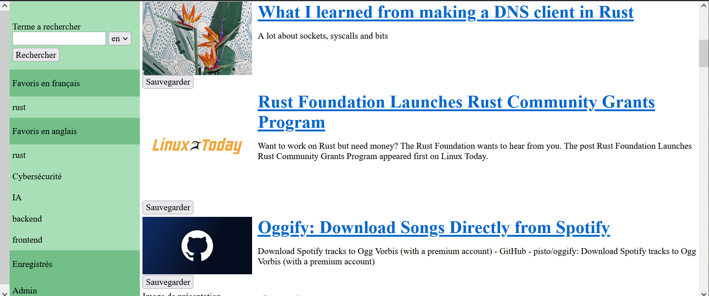

Dans le cadre de ma formation, j'ai été amené a créé un outil de veille, celui si possède des requêtes enregistrés que je peut utiliser pour accéder rapidement a mes recherches les plus courantes.

En dehors du programme traditionnellement suivi, j'ai décidé de me former dans le langage de programmation rust pour plusieurs raisons.
Premièrement, il est très apprécié par les personnes qui l'utilisent et il y a de grandes chances pour qu'il devienne un langage très populaire dans l'avenir.
Ensuite, il met en place des mécanismes comme l'ownership qui existe dans peu d'autres langages et je pense qu'il ne peut être que positif de s'accoutumer à de nouveaux concepts.
Enfin, il fait partie des langages qui seront probablement privilégiés dans l'utilisation d'une autre technologie en développement, web assembly.